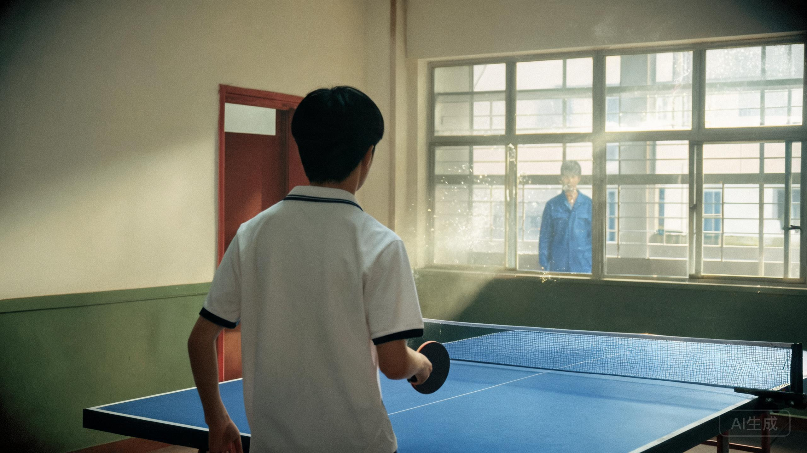

河北师大附中 · 旧教学楼三层球室
“乒乓少年背向我，沉默地注视，无法离开的教室。”

校刊上的照片是母亲保存的。照片里，陈默背对镜头，站在球台前。他刚打完一场训练赛，球拍还握在手里。窗外站着一个穿蓝工装的人，没有进门。
“他站了很久。”陈默后来在寻人帖里写，“我背对着他，知道他在。我以为他会进来。他没有。”
那天下午，父亲本来应该在家。门卫登记簿说他17:58才下班。母亲说，他提前走了，去学校看儿子打球，然后回家换衣服。
球拍柄上刻着“10·07”。那是陈默第一次拿市里亚军的日期。父亲把球拍借给儿子，自己站在门外，一小时的比赛，没有进去。
“高三（2）班陈默在本次市中学生乒乓球赛中获得亚军。他的反手推挡被裁判称为‘像一台不知疲倦的机器’。”
“比赛结束后，陈默把球拍借给了父亲。他说，父亲在厂里仓库工作，手很稳，却从来不打球。”
“10月7日下午训练时，有人看见一个穿蓝工装的中年男人站在球室窗外。他没有敲门。训练结束后，他已经不在了。”
校刊编辑在校对栏里留了一行铅笔字：“照片里那个人，一直背对着我们。”
球室窗外是旧教学楼的走廊。走廊尽头是高三（2）班教室。2026年8月20日，这栋楼要拆了。
父亲站在窗外的那一小时，可能已经知道晚上要去哪里。球拍柄上的“10·07”，后来成了铁盒的密码。日期不是随便刻的：那是他最后一次看见儿子打球。